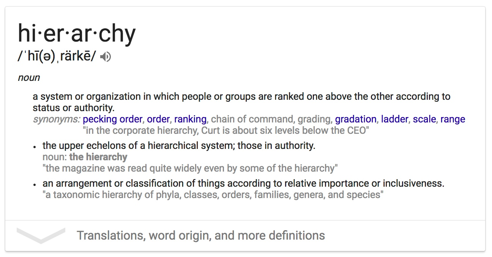

class: center, middle # Hierarchical Datasets ## When? What? How? --- .context[hierarchical data] # Our Goal? By the end of this session,<br> you should have a<br> solid understanding,<br> and a comfort with,<br> hierarchical datasets. -- ### We will learn: -- 1. *When* do they matter? -- 2. *What* are they? -- 3. *How* do we work with them?<br> -- ... & some d3 visuals <br> <br> -- (Today we focus is on the data; that means our in-class visuals will stay light.) --- class: center, middle ## When do they matter? --- .context[hierarchical data] # When do they matter? <br> <br> Smart data structures and dumb code works a lot better<br> than the other way around.<br> .author[—Eric S. Raymond (The Cathedral and the Bazaar)] <br> <br> -- Bad programmers worry about the code.<br> Good programmers worry about data structures and their relationships.<br> .author[—Linus Torvalds] <br> <br> -- “Data! Data! Data!" he cried impatiently.<br> "I can't make bricks without clay.”<br> .author[—Sherlock Holmes] <br> <br> <br> <br> -- .center[**It matters now....**] --- name: natural-hierarchies .context[when it matters] # Natural hierarchies Some data is naturally hierarchical: --- template: natural-hierarchies * Country ⇢ State ⇢ City ⇢ Street ⇢ House <!--- TODO: Add a visual of the hierarchy before the json. ---> ``` json { "continent": "North America", "countries": [ { "country": "Canada" }, { "country": "Mexico" }, { "country": "United States", "states": [ { "state": "California" }, { "state": "Indiana", "cities": [ { "city": "Fishers" }, { "city": "Carmel" }, { "city": "Indianapolis" } ] } ] } ] } ``` --- template: natural-hierarchies .context[when it matters] * Country ⇢ State ⇢ City ⇢ Street ⇢ House * CEO ⇢ EVP ⇢ SVP ⇢ VP ⇢ DIR ⇢ MGR -- * Folder ⇢ Subfolder ⇢ File -- * Dictionary ⇢ Letter ⇢ Word ⇢ Part-of-speech ⇢ Definitions ⇢ Examples <br> <br> <br> <br> .right[] --- .context[when it matters] # Natural hierarchies -- <table height="100%"> <tr><td><span class="exercise"><i>Other examples of naturally occurring hierarchies?</i></span></td></tr> <tr><td><span class="exercise"> <br> <br> </span></td></tr> <tr><td></td></tr> <tr><td></td></tr> </table> --- .context[when it matters] # Natural hierarchies <table height="100%"> <tr><td><span class="exercise"><i>Other examples of naturally occurring hierarchies?</i></span></td></tr> <tr><td><span class="exercise"><i>Paper & Pencil exercise:</i> Draw a picture of a dataset that you want to work with that is hierarchical.</span></td></tr> <tr><td></td></tr> <tr><td></td></tr> </table> .right[(taxonomies & hierarchies are a natural fit)] --- .context[when it matters] # d3 examples <!-- TODO: Better attribute http://d3indepth.com/layouts/ and --> <table> <tr> <td><iframe width="400" height="250" frameborder="0" src="tree.html"></iframe></td> <td><iframe width="400" height="250" frameborder="0" src="treemap.html"></iframe></td> </tr> <tr> <td><div style="text-align: center;"> <iframe style="display: block;" width="400" height="250" frameborder="0" src="sunburst.html"></iframe></div></td> <td><iframe width="400" height="250" frameborder="0" src="pack.html"></iframe></td> </tr> </table> --- class: center, middle ## What are they? --- .context[what are they] # Hierarchy vs. Tabular --- .context[what are they] # Hierarchical data = JSON Arrays + JSON Objects ## JSON Array `[ "Listen", "Learn", "Grow" ]` 1. an ordered list of values, seperated by commas 2. it can store strings, numbers, booleans, objects, other arrays, or a combination 3. surrounded by [ and ] (square brackets) <br> <br> -- ## JSON Object `{ "name": "John", "age": 30, "motto": [ "Listen", "Learn", "Grow" ] }` 1. a list of key/value pairs * each pair is seperated a comma * keys and values are separated by a colon 2. each key is a string; each value is a strings, numbers, booleans, objects, other arrays 3. surrounded by { and } (curly braces) --- .context[what are they] # --- class: center, middle ## How do we work with them? --- .context[how to work with them] # Read the docs ([d3-hierarchy](https://github.com/d3/d3-hierarchy "d3 hierarchy api documentation")) --- class: center, middle ## Some d3 visuals --- .context[examples] #